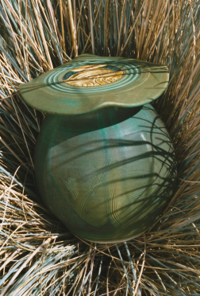

{kind=link}
![New "Copper Patina Jar" [click for large (1.7 MB) image]](../projects/FOT0222-03-2002-09-02E-thumb.png) :
1983 to 2002
:
1983 to 2002 |
A Garden of Earthy DelightsA collection of new work inspired by the October 4 - 30, 2002 Earthworks -- |
last updated 2002-10-22-15:19 -0700 (pdt) activity A021000 |
When I first took ceramics and pottery classes many years ago, our instructor took the class to the Asian Art Museum in San Francisco. I was hooked. I fell in love with Japanese pottery, particularly the folk pottery that was being produced in Mashiko.
I learned about Shoji Hamada and Bernard Leach, and I tried to ascertain what was behind this particular kind of expression--pristine simplicity and poetic at the same time.
I learned everything I could about what actually went into the production of a piece of pottery, and I said I would go to Mashiko. Thirty years later, I did.
This past April I had the pleasure of accompanying Dennis to Japan. One of the things we did there was visit Mashiko. Shoji Hamada lived and worked there for many years. His home, workspace, kilns and reference-collection museum are still there. Visiting there was an extraordinary and blurry experience: I was in tears a good part of the time. Inspiring is, I think, the word I am looking for. In the middle of Mashiko, on April 20, 2002, I was returned to what it was that had me want to be a potter in the beginning: working with all four elements--air, earth, fire, water--to create an expression closely tied to the earth and brimming with life at the same time.
:
1983 to 2002Now, there's another side to this as well. In July 1983, I did a ten-day workshop with Warren MacKenzie at Big Creek Pottery in Davenport, California, near Santa Cruz. Now a lot of Warren's work is influenced by Hamada and Leach, so we got along famously. During the time of that workshop, I made a lidded jar--it was the first one--sort of reminiscent of a Japanese lantern. I still have the jar that Warren coached me through.
The pieces exhibited in "The Garden of Earthy Delights" are new creations loosely based on that 1983 lidded pot.
created 2002-10-03-21:41 -0700 (pst) by orcmid
$$Author: Vicki $
$$Date: 03-08-10 11:59 $
$$Revision: 15 $